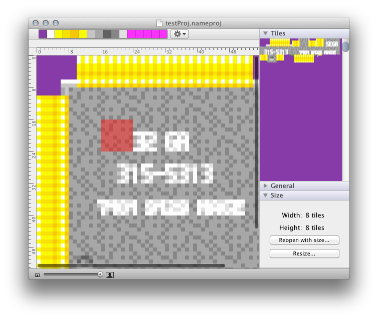

A nametable editor for the Sega Mega Drive.
Nametablinator is a nametable editor to edit nametables (or screen maps) for the Mega Drive. It's got support for shadow/highlight, tile offsets, tile copying and flipping, zoom, image export, and much more.
